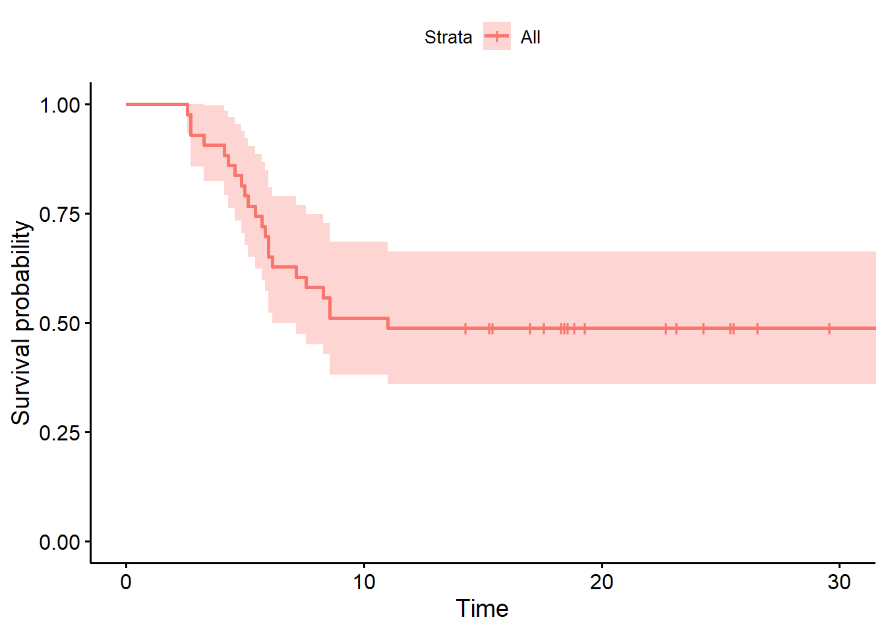
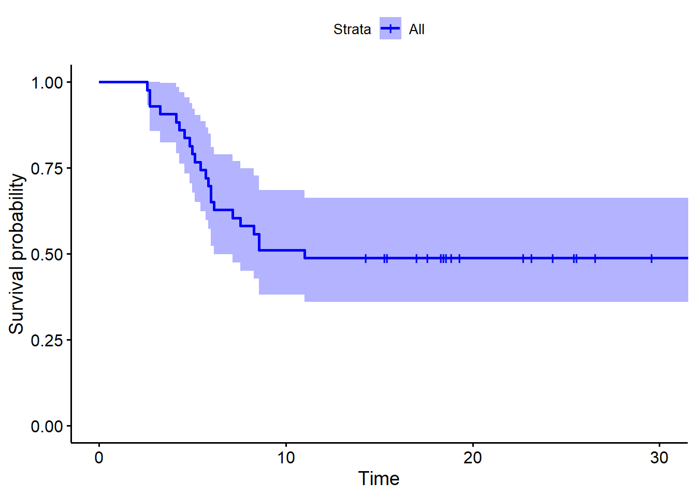
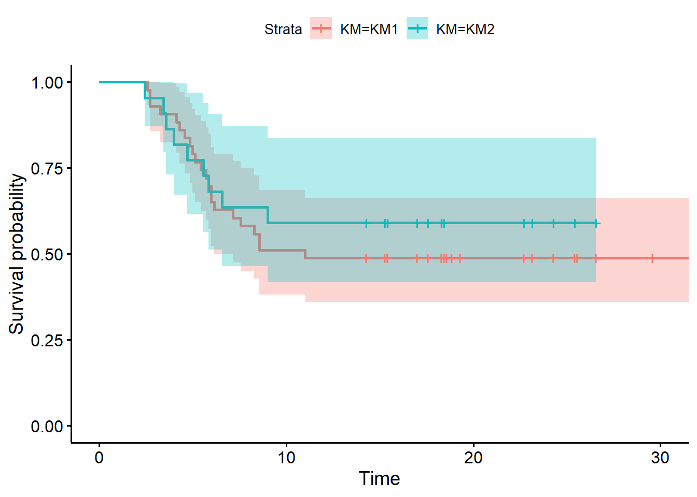

3 Survival Analysis: KaplanMeier() and LogRankTest() function
The fomm class also contains methods for performing the Survival Analysis.
The first of these functions is KaplanMeier() function, which builds a Kaplan Meier curve through an indicated pathway that the user enters by the function inputs.
Specifically, the the function arguments are:
- fromState: first event of the pathway;
- toState: last event of the pathway;
- passingThrough: array containing the events labels that should be included in the pathay;
- passingNotThrough: array containing the events labels that should NOT be included in the pathay;
- PDV: array representing the event(s) the case must experience in order to become censored
- withPatientID: array which allows to filter by case-ID
- UM: time unit (default: “mins,” possible values: “mins,”“hours,”“days,”“weeks,”“months”)
survival.list<-objFOMM$KaplanMeier(fromState = "Medical Visit",
toState = "death",
passingThrough = "partial resection",
PDVAt = "MedicalVisit",
UM = "weeks")
s1 <- survfit(Surv(time, outcome) ~ 1, data = survival.list$table)
survminer::ggsurvplot(s1)
#also: survminer::ggsurvplot(survival.list$KM,data = survival.list$table)survival.list2<-objFOMM$KaplanMeier(fromState = "Medical Visit",
toState = "chemotherapy",
passingThrough = "partial resection",
PDVAt = "MedicalVisit",
UM = "weeks")
s2 <- survfit(Surv(time, outcome) ~ 1, data = survival.list2$table)
survminer::ggsurvplot(s1,palette = "blue")
It is possible to compare two Kaplan Meier through a Log Rank test by the LogRankTest() function:
log.out<-objFOMM$LogRankTest(KM1 = survival.list,KM2 = survival.list2)
log.out$survdiff## Call:
## survdiff(formula = Surv(time, outcome) ~ KM, data = new.df)
##
## N Observed Expected (O-E)^2/E (O-E)^2/V
## KM=KM1 43 22 20.4 0.126 0.371
## KM=KM2 22 9 10.6 0.243 0.371
##
## Chisq= 0.4 on 1 degrees of freedom, p= 0.5new.df <- rbind(survival.list$table,survival.list2$table)
new.df$KM <- c(rep("KM1",nrow(survival.list$table) ),rep("KM2",nrow(survival.list2$table) ))
survminer::ggsurvplot(fit = log.out$survfit,data = new.df,conf.int = T)